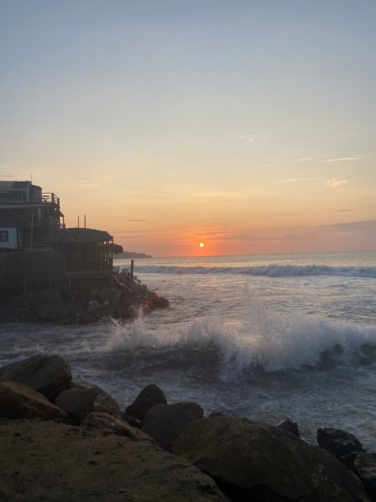
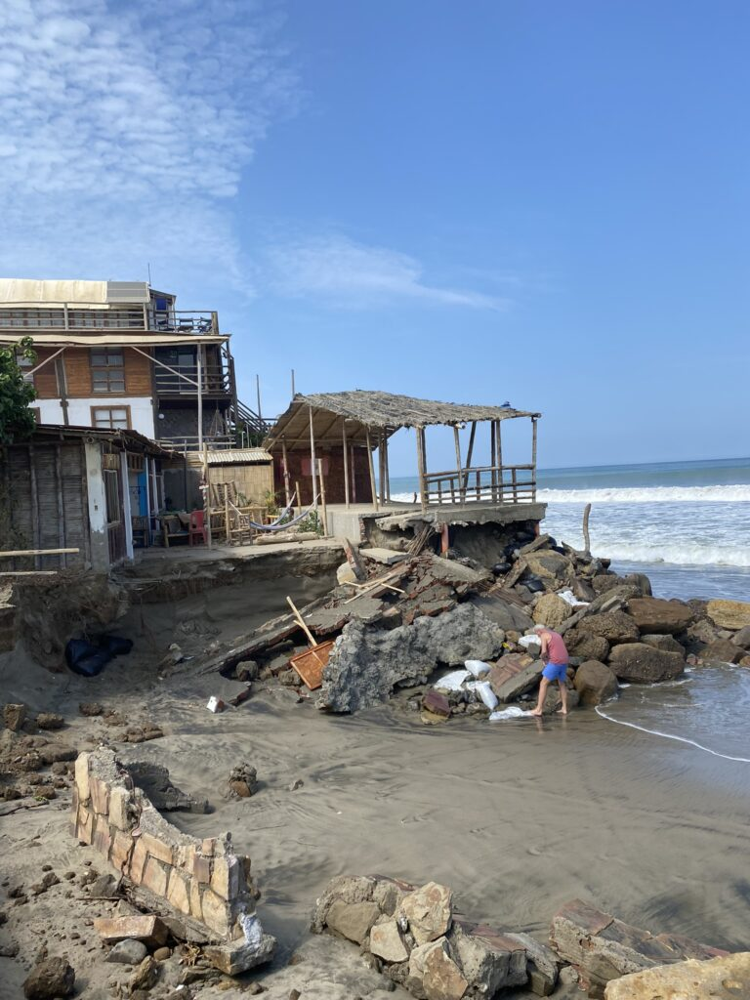
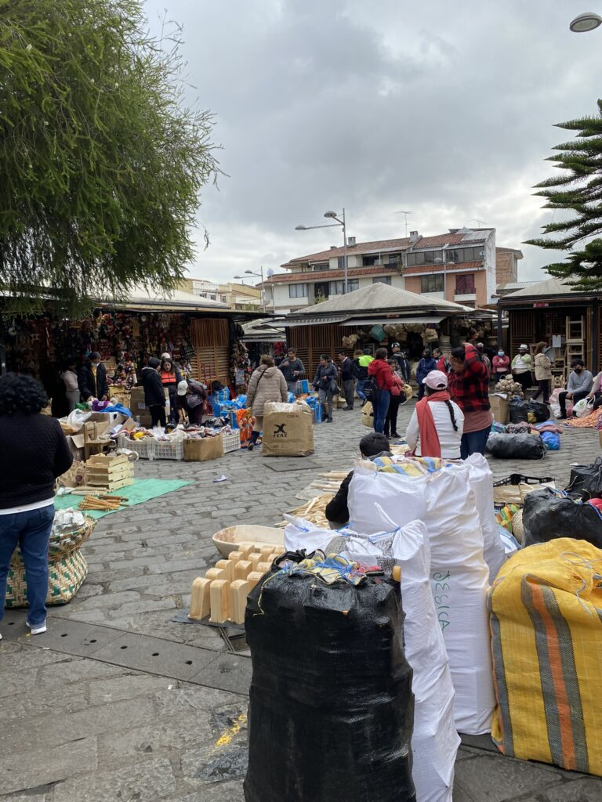
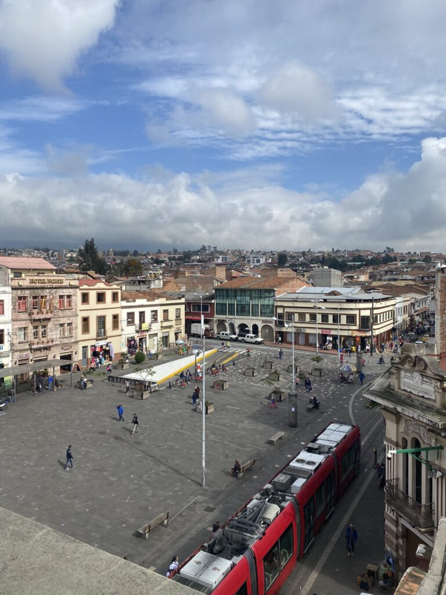
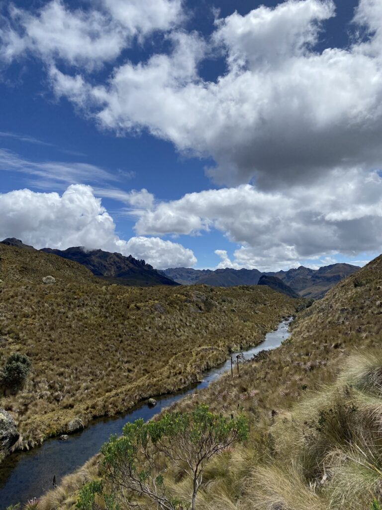
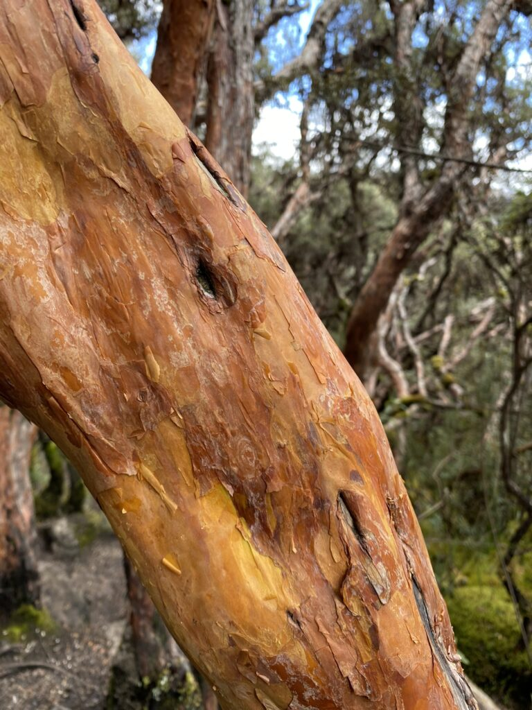
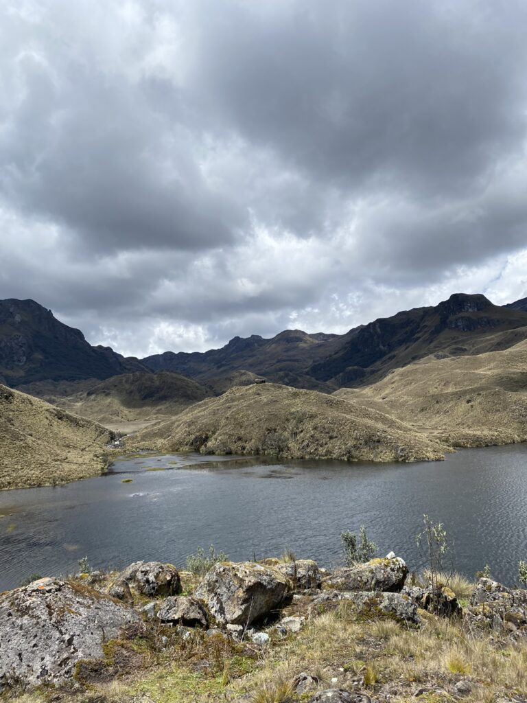
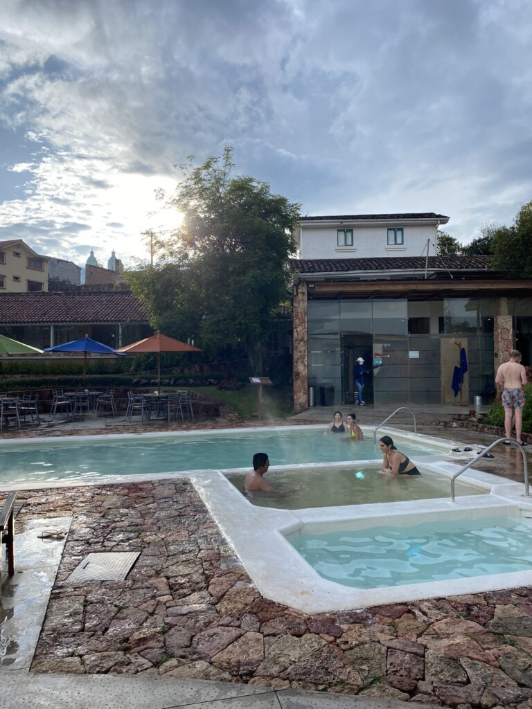

Tijdens de zonsondergang van Máncora klettert het water met grote kracht tegen de rotsen. De bezoekers en eigenaars van de hostels aan zee zijn uitgetrokken om het indrukwekkend hoge water te bewonderen. Ik kreeg die middag al een voorproefje van de ruige zee. Tijdens mijn dagelijkse strandwandeling had ik het ene moment nog droge voeten, maar stond het water binnen enkele ongenblikken tot mijn borst. De stroming duwde me bijna tegen de rotsen, terwijl ik wankelend mijn rugzak met kostbaarheden hoog in de lucht hield en de locals riepen dat als de wiedeweerga op moest hoepelen, wat ik zonder twijfel deed.
Volgens de bewoners is de oceaan in geen twintig jaar zo wild geweest. De strandopgang is tijdens de schemering helemaal afgebroken en volgelopen, waardoor het hoopje verzamelde mensen boven op een afgrond naar de metershoge golven staart. Degenen die besluiten er een picnic van te maken, worden afgestraft met een enorme bak zout water die nu ook de straten doet vollopen. De rotsen zijn nog net hoog genoeg om mijn kamer droog te houden, maar de buren moeten de volgende dag wel aan de slag. De zee heeft het halve terras meegezogen, naast een grote visserspaal, stukken duingebied en de rode vlag die zwemmers moest behoeden. Steunpalen zijn verpulverd tot splinters en rotswanden aanzienlijk verwoest. Alleen de dapperste surfers zijn nog in de niet zo stille oceaan te vinden. Bij een val vanaf een hoge golf blijven ze wel een halve minuut onder water. Sporadisch domineerde het rottende rioolwater het dorp, maar nu is het de zilte zee die het straatbeeld bepaalt.


Mijn lichaam functioneert weer voldoende om het avontuur voort te zetten. Van zeeniveau pak ik een haarspeldbochtrijke nachtbus naar het op 2.560 meter hoogte liggende Cuenca, Zuid-Ecuador. In mijn eerste rondje door het ultra-katholieke oord met maar liefst 53 kerken vallen vooral de kooplieden op. In de levendige straten van het koloniale centrum kun je binnen luttele seconden kippen en konijnen aanschaffen. De dieren staan op elkaar gedrukt in manden op de stoep, snavels en snorharen buiten de tralies. Langs hen strompelen mompelende mannetjes met de vreemdste verzamelingen assortiment. Mocht je toevallig zoeken naar rubberen handschoenen, afstandsbedieningen en beurse tomaten, dan zit je hier goed. Inheems geklede dames zitten zo gecamoufleerd in hun verkoopstalletje met naaiwaar, beeldjes en wollen kleding, dat ik een sprongetje maak als er eentje beweegt. Een slager komt niet verder in zijn verkooptactiek dan het eindeloos roepen van ‘pollo, pollo’ (kip). De achter de geraniums glurende bejaarden die de lonely planet had beloofd, zijn tot dusver nog niet te vinden.
De stad biedt precies waar ik op hoopte; virtuose straten, lekker eten, grote markthallen en een natuurrijke omgeving. Met een Utrechts stel trek ik naar Cajas National Park, waar de stilte ondoordringbaar is. Drie uur trekken we door het groene berggebied over een vochtig pad waarvan de nevel net is weggetrokken. De route daalt of stijgt constant en leidt ons langs moerassen, een mangrovebos met oranje bomen, een machtige grot en kraakheldere meren met of zonder riet. Na een straffe eindkklim stappen we hijgend in de bus, precies op het moment dat de zon plaatsmaakt voor donderwolken, zoals elke middag. We vervolgen de kletsnatte tocht naar de suburbs, waar dampende hotsprings op ons wachten. Ondanks de luxe krijgen we tiewraps om ons kluistje te sluiten. In de Japanse sfeer laat ik me zakken in het hete water tussen andere verzadigde gezichten. Ik rouleer regelmatig tussen de turkse stoomkamer, het ijsbad en de natuurlijk verwarmde baden, waar een houten blad met cocktails al snel onze kant opdrijft. Ik fraudeer me in het exclusieve spa-gedeelte en vind een uitgegraven ruimte in de rotswand met kaarsverlichte poeltjes, voordat ik vriendelijk verzocht wordt te vertrekken naar de normale mensen-sectie.



De volgende dag ben ik nog steeds rozig. De stad is er eentje om in rond te slenteren en wel zien wat je tegenkomt. Achter een museum met eeuwenoude weefwerken, potten en gereedschappen ligt een archeologische vindplaats met uitzicht op een oogverlindende tuin vol planten en tropische vogels. Afgeleid door bedrijvige pleinen en oude bouwwerken ben ik net op tijd terug voor de weersomslag. Het dakterras van het relaxte hostel draagt mij door de laatste dag Cuenca, een plaats om terug te keren.


